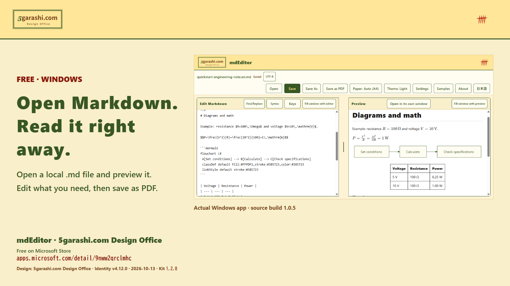

Case study: mdEditor
A Windows app and bilingual materials explaining how to use it.
App and demonstration
Actual editing, diagram and math previews, and PDF export.
Web, articles and samples
A path from discovering a use case to watching and trying it.
Social images and print
Bilingual use-case images and a PDF linking to the Store and office.

This describes produced materials. Audience growth and user counts have not been established.